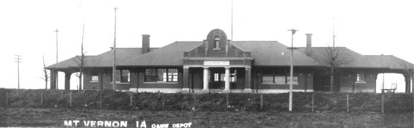
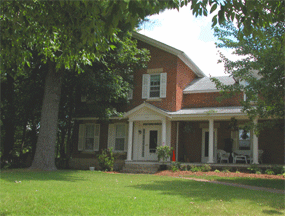

The Railroad Era

When the railroad pushed through to the north edge of town in 1959, every aspect of life soon changed. It proved beneficial to the college because more students could reach the school from greater distances. Merchants could order new merchandise. Easy rail access stimulated town residential development.
A boom of varied construction was touched off. Contractors utilized new building materials and "plan book" designs. In fact, new construction reflected a steady increase in Mount Vernon's population through 1905. The 1890's in particular were notable for new housing, with as many as 30 homes built in a year.
Many still stand today.

The brick home of the Reuben A. Ash estate (1854-1863) is the centerpiece of a number of substantial homes built in the northwest section of Mount Vernon. The Ash Park Addition has many Victorian homes that are still standing strong today. They represent a broad palette of architectural types that flourished with the railroad years.
Look closely at the architectural work of these homes in the Details section of the MVHPC Web Site.
Continue to The Cornell College Era
home